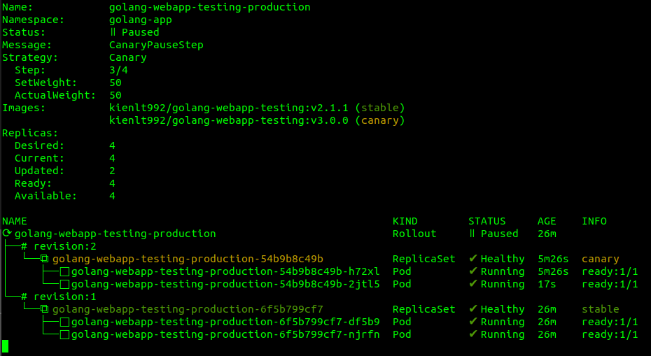
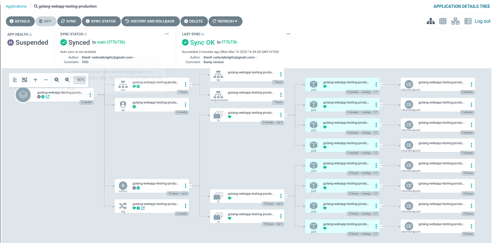
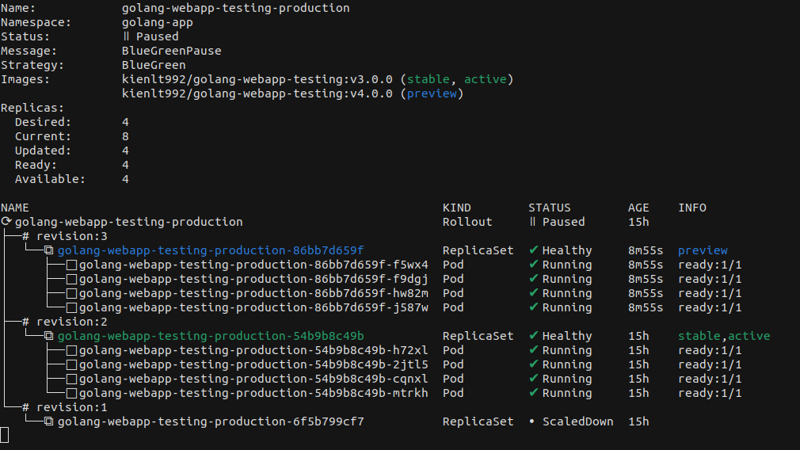
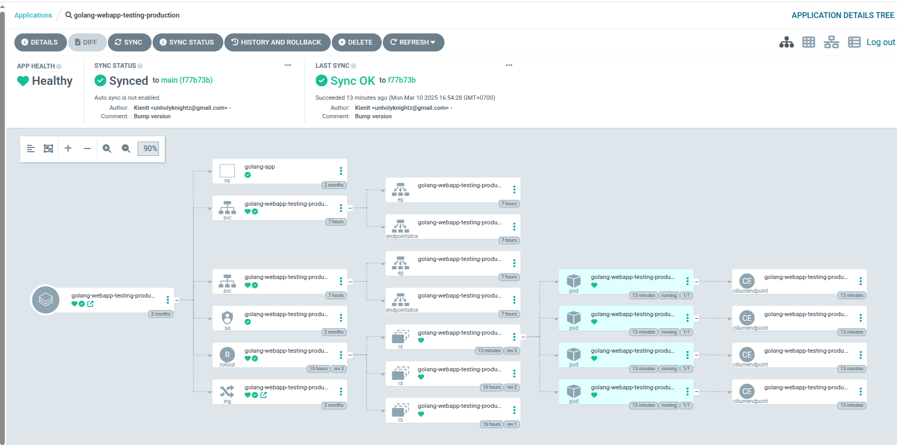

What is Argo Rollout, is it related to ArgoCD?
- Argo Rollouts is a progressive delivery controller for K8S which provides advanced deployment capabilities such as blue-green, canary.....

- It doesn't relate to ArgoCD. Argo Rollouts is often used in conjunction with Argo CD, the Argo project’s continuous delivery (CD) tool. Argo CD implements declarative GitOps-driven CD for Kubernetes, while Rollouts offers a controller and CRDs that let you robustly manage blue-green and canary deployments
What is Canary/Blue-Green deployment?
Umm, if i explain complete for this, this article will be long to read so i will not include it here, only focus on the main objective.
In case you don't know about it, google is your friend xD
Installation
Install Argo Rollouts
- I will use the default install, assume you have Argocd installed
kubectl create namespace argo-rollouts
kubectl apply -n argo-rollouts -f https://github.com/argoproj/argo-rollouts/releases/latest/download/install.yaml
- Output after the command is executed is like this:
namespace/argo-rollouts created
customresourcedefinition.apiextensions.k8s.io/analysisruns.argoproj.io created
customresourcedefinition.apiextensions.k8s.io/analysistemplates.argoproj.io created
customresourcedefinition.apiextensions.k8s.io/clusteranalysistemplates.argoproj.io created
customresourcedefinition.apiextensions.k8s.io/experiments.argoproj.io created
customresourcedefinition.apiextensions.k8s.io/rollouts.argoproj.io created
serviceaccount/argo-rollouts created
clusterrole.rbac.authorization.k8s.io/argo-rollouts created
clusterrole.rbac.authorization.k8s.io/argo-rollouts-aggregate-to-admin created
clusterrole.rbac.authorization.k8s.io/argo-rollouts-aggregate-to-edit created
clusterrole.rbac.authorization.k8s.io/argo-rollouts-aggregate-to-view created
clusterrolebinding.rbac.authorization.k8s.io/argo-rollouts created
configmap/argo-rollouts-config created
secret/argo-rollouts-notification-secret created
service/argo-rollouts-metrics created
deployment.apps/argo-rollouts created
- Make sure argo rollout controller is ready:
kubectl get pods -n argo-rollouts
NAME READY STATUS RESTARTS AGE
argo-rollouts-5498f9bc4b-8xt26 1/1 Running 0 69s
- Extra note: If you have multiple k8s clusters like mine, you have to install Argo Rollout to each cluster you want to use feature rollouts for canary/blue-green deployment.
Install kubectl plugin for Argo Rollouts
- Download and install
curl -LO https://github.com/argoproj/argo-rollouts/releases/latest/download/kubectl-argo-rollouts-linux-amd64
chmod +x kubectl-argo-rollouts-linux-amd64
sudo mv kubectl-argo-rollouts-linux-amd64 /usr/local/bin/kubectl-argo-rollouts
- Check:
kubectl argo rollouts version
kubectl-argo-rollouts: v1.8.0+9c5d75d
BuildDate: 2025-01-30T15:54:30Z
GitCommit: 9c5d75d84a998bc0515caa64085bf8c23f2a41b7
GitTreeState: clean
GoVersion: go1.23.5
Compiler: gc
Platform: linux/amd64
Testing canary rollout
Change from deployment to canary rollout
- I already have argocd deployment with helm running, now i want to migrate it to Argo rollouts. How i can achieve this?
First, remove
deployment.yamland add rollout.yaml. You will notice little change inapiVersionandkind. Thenstrategy, will be defined like below
strategy:
canary:
steps:
- setWeight: 25 # 25% traffic to new version (with replica count 4, 1 pod will be updated)
- pause: { duration: 300s } # wait 5 minutes before next step
- setWeight: 50 # 50% traffic to new version
- pause: {} # wait indefinitely for manual approval
- Example picture after switch from deployment to rollout

- Check the current version before rollout with canary:
for i in {0..100}; do curl -XGET "http://golang-webapp-testing.rke2-cluster.kienlt.local/version"; done
Version: 2.1.1
Version: 2.1.1
Version: 2.1.1
Version: 2.1.1
Version: 2.1.1
Version: 2.1.1
Version: 2.1.1
Version: 2.1.1
Version: 2.1.1
- Ok. Let's build a new image and manually switch image tags for the fast demo. Assume the new tag will be v3.0.0. Code repo: https://github.com/BlackMetalz/Golang-Webapp-Testing
docker build . -t kienlt992/golang-webapp-testing:v3.0.0
docker push kienlt992/golang-webapp-testing:v3.0.0
- Check the current status of rollout after migration:
kubectl argo rollouts get rollout -n golang-app golang-webapp-testing-production
Name: golang-webapp-testing-production
Namespace: golang-app
Status: ✔ Healthy
Strategy: Canary
Step: 4/4
SetWeight: 100
ActualWeight: 100
Images: kienlt992/golang-webapp-testing:v2.1.1 (stable)
Replicas:
Desired: 4
Current: 4
Updated: 4
Ready: 4
Available: 4
NAME KIND STATUS AGE INFO
⟳ golang-webapp-testing-production Rollout ✔ Healthy 18m
└──# revision:1
└──⧉ golang-webapp-testing-production-6f5b799cf7 ReplicaSet ✔ Healthy 18m stable
├──□ golang-webapp-testing-production-6f5b799cf7-b5rh7 Pod ✔ Running 18m ready:1/1
├──□ golang-webapp-testing-production-6f5b799cf7-d9j8r Pod ✔ Running 18m ready:1/1
├──□ golang-webapp-testing-production-6f5b799cf7-df5b9 Pod ✔ Running 18m ready:1/1
└──□ golang-webapp-testing-production-6f5b799cf7-njrfn Pod ✔ Running 18m ready:1/1
- Ok, now update the manifest to use image v3.0.0 and sync. Then use the command to watch the rollout progress:
kubectl argo rollouts get rollout -n golang-app golang-webapp-testing-production --watch

- Output for check version, you can see there are some requests that have version 3.0.0 already!
for i in {0..100}; do curl -XGET "http://golang-webapp-testing.rke2-cluster.kienlt.local/version" && sleep 1; done
Version: 3.0.0
Version: 2.1.1
Version: 2.1.1
Version: 3.0.0
Version: 3.0.0
Version: 2.1.1
Version: 2.1.1
Version: 2.1.1
Version: 2.1.1
Version: 2.1.1
Version: 2.1.1
Version: 2.1.1
- After 5 minutes, the rollout for the canary will increase to 50% as we defined in the rollout

- We assume our application is good and ready to promote 50% left for complete rollout.
kubectl argo rollouts promote -n golang-app golang-webapp-testing-production
rollout 'golang-webapp-testing-production' promoted
- Check again rollout status again for the final

- Check request again, you can see it is 100% switched to version 3.0.0 right now!
for i in {0..100}; do curl -XGET "http://golang-webapp-testing.rke2-cluster.kienlt.local/version" && sleep 1; done
Version: 3.0.0
Version: 3.0.0
Version: 3.0.0
Version: 3.0.0
Version: 3.0.0
Version: 3.0.0
Version: 3.0.0
Version: 3.0.0
Version: 3.0.0
Version: 3.0.0
.......
How could we monitor and rollback canary deployment if new version has the issue?
- This is a good question to improve this article. Let's create canary deployment first:
kubectl argo rollouts get rollout golang-webapp-testing-production -n golang-app
Name: golang-webapp-testing-production
Namespace: golang-app
Status: ॥ Paused
Message: CanaryPauseStep
Strategy: Canary
Step: 3/4
SetWeight: 50
ActualWeight: 50
Images: kienlt992/golang-webapp-testing:v4.0.0 (stable)
kienlt992/golang-webapp-testing:v5.0.0 (canary)
Replicas:
Desired: 4
Current: 4
Updated: 2
Ready: 4
Available: 4
NAME KIND STATUS AGE INFO
⟳ golang-webapp-testing-production Rollout ॥ Paused 46h
├──# revision:10
│ └──⧉ golang-webapp-testing-production-6c8c79b696 ReplicaSet ✔ Healthy 6m56s canary
│ ├──□ golang-webapp-testing-production-6c8c79b696-dsltf Pod ✔ Running 6m56s ready:1/1
│ └──□ golang-webapp-testing-production-6c8c79b696-ggh56 Pod ✔ Running 107s ready:1/1
├──# revision:9
│ └──⧉ golang-webapp-testing-production-86bb7d659f ReplicaSet ✔ Healthy 30h stable
│ ├──□ golang-webapp-testing-production-86bb7d659f-r6drp Pod ✔ Running 16m ready:1/1
│ └──□ golang-webapp-testing-production-86bb7d659f-zgv7h Pod ✔ Running 16m ready:1/1
- Make some requests for testing, you can see status code 504 right below
while true;do status_code=$(curl -s -o /dev/null -w "%{http_code}" http://golang-webapp-testing.rke2-cluster.kienlt.local/version); echo "Status code: $status_code"; sleep 1; done
Status code: 504
Status code: 200
Status code: 200
Status code: 200
Status code: 200
Status code: 200
Status code: 200
Status code: 200
Status code: 200
Status code: 504
Status code: 200
Status code: 200
Status code: 200
Status code: 200
Status code: 200
Status code: 200
Status code: 200
Status code: 504
Status code: 200
Status code: 504
- Query in Prometheus:

- Wait for a little time and see the alert:

- Hmm? Wait a minute? 100%? This is not correct. Let me fix this by correcting Prometheus rule xD


- Now we need to rollback the canary rollout. And the request will be 200 again
kubectl argo rollouts abort golang-webapp-testing-production -n golang-app
rollout 'golang-webapp-testing-production' aborted
- Get rollout status:
kubectl argo rollouts get rollout golang-webapp-testing-production -n golang-app
Name: golang-webapp-testing-production
Namespace: golang-app
Status: ✖ Degraded
Message: RolloutAborted: Rollout aborted update to revision 10
Strategy: Canary
Step: 0/4
SetWeight: 0
ActualWeight: 0
Images: kienlt992/golang-webapp-testing:v4.0.0 (stable)
Replicas:
Desired: 4
Current: 4
Updated: 0
Ready: 4
Available: 4
NAME KIND STATUS AGE INFO
⟳ golang-webapp-testing-production Rollout ✖ Degraded 46h
├──# revision:10
│ └──⧉ golang-webapp-testing-production-6c8c79b696 ReplicaSet • ScaledDown 21m canary
├──# revision:9
│ └──⧉ golang-webapp-testing-production-86bb7d659f ReplicaSet ✔ Healthy 30h stable
│ ├──□ golang-webapp-testing-production-86bb7d659f-r6drp Pod ✔ Running 30m ready:1/1
│ ├──□ golang-webapp-testing-production-86bb7d659f-zgv7h Pod ✔ Running 30m ready:1/1
│ ├──□ golang-webapp-testing-production-86bb7d659f-6bbhk Pod ✔ Running 32s ready:1/1
│ └──□ golang-webapp-testing-production-86bb7d659f-6qfbd Pod ✔ Running 32s ready:1/1
- After sometimes....


- Let's make status Healthy again by (Don't focus on correct revision, i was test abort and promote multiple times And it won't affect at all i guess xD)
# kubectl argo rollouts undo golang-webapp-testing-production --to-revision=9 -n golang-app
INFO[0000] unknown field "spec.template.metadata.creationTimestamp"
rollout 'golang-webapp-testing-production' undo
# kubectl argo rollouts get rollout golang-webapp-testing-production -n golang-app
Name: golang-webapp-testing-production
Namespace: golang-app
Status: ✔ Healthy
Strategy: Canary
Step: 4/4
SetWeight: 100
ActualWeight: 100
Images: kienlt992/golang-webapp-testing:v4.0.0 (stable)
Replicas:
Desired: 4
Current: 4
Updated: 4
Ready: 4
Available: 4
NAME KIND STATUS AGE INFO
⟳ golang-webapp-testing-production Rollout ✔ Healthy 47h
├──# revision:13
│ └──⧉ golang-webapp-testing-production-86bb7d659f ReplicaSet ✔ Healthy 31h stable
│ ├──□ golang-webapp-testing-production-86bb7d659f-r6drp Pod ✔ Running 77m ready:1/1
│ ├──□ golang-webapp-testing-production-86bb7d659f-zgv7h Pod ✔ Running 77m ready:1/1
│ ├──□ golang-webapp-testing-production-86bb7d659f-hwd2s Pod ✔ Running 3m43s ready:1/1
│ └──□ golang-webapp-testing-production-86bb7d659f-mt5fp Pod ✔ Running 3m43s ready:1/1
├──# revision:12
│ └──⧉ golang-webapp-testing-production-6c8c79b696 ReplicaSet • ScaledDown 67m
├──# revision:11
│ └──⧉ golang-webapp-testing-production-54b9b8c49b ReplicaSet • ScaledDown 46h
└──# revision:1
└──⧉ golang-webapp-testing-production-6f5b799cf7 ReplicaSet • ScaledDown 47h
Trying blue-green deployment
Config rollout for blue-green
- Just change
strategysection from previous rollout:
strategy:
blueGreen:
activeService: {{ include "golang-webapp-testing.fullname" . }}-active
previewService: {{ include "golang-webapp-testing.fullname" . }}-passive
autoPromotionEnabled: false # Do not automatically promote the new ReplicaSet to the active service
# autoPromotionSeconds: 300 # Wait 300 seconds before automatically promoting the new ReplicaSet to the active service
- Add/Update service for blue-green deployment
apiVersion: v1
kind: Service
metadata:
name: {{ include "golang-webapp-testing.fullname" . }}-active
labels:
{{- include "golang-webapp-testing.labels" . | nindent 4 }}
spec:
type: {{ .Values.service.type }}
ports:
- port: {{ .Values.service.port }}
targetPort: http
protocol: TCP
name: http
selector:
{{- include "golang-webapp-testing.selectorLabels" . | nindent 4 }}
---
apiVersion: v1
kind: Service
metadata:
name: {{ include "golang-webapp-testing.fullname" . }}-passive
labels:
{{- include "golang-webapp-testing.labels" . | nindent 4 }}
spec:
type: {{ .Values.service.type }}
ports:
- port: {{ .Values.service.port }}
targetPort: http
protocol: TCP
name: http
selector:
{{- include "golang-webapp-testing.selectorLabels" . | nindent 4 }}
- Also you need to update your ingress as well (like mine) for expose service. Just add -active after service name. Then you will be able to access your service after switching to blue-green rollouts.
{{- if .Values.ingress.enabled -}}
{{- $fullName := include "golang-webapp-testing.fullname" . -}}
{{- $svcPort := .Values.service.port -}}
....... etc ...........
rules:
{{- range .Values.ingress.hosts }}
- host: {{ .host | quote }}
http:
paths:
{{- range .paths }}
- path: {{ .path }}
{{- if and .pathType (semverCompare ">=1.18-0" $.Capabilities.KubeVersion.GitVersion) }}
pathType: {{ .pathType }}
{{- end }}
backend:
{{- if semverCompare ">=1.19-0" $.Capabilities.KubeVersion.GitVersion }}
service:
name: {{ $fullName }}-active
port:
number: {{ $svcPort }}
{{- else }}
serviceName: {{ $fullName }}-active
servicePort: {{ $svcPort }}
- After that, push the changes to manifest repo and get synced with Argocd.

- Check rollout status after Argocd is healthy. You can see Strategy changed to BlueGreen
# kubectl argo rollouts get rollout -n golang-app golang-webapp-testing-production
Name: golang-webapp-testing-production
Namespace: golang-app
Status: ✔ Healthy
Strategy: BlueGreen
Images: kienlt992/golang-webapp-testing:v3.0.0 (stable, active)
Replicas:
Desired: 4
Current: 4
Updated: 4
Ready: 4
Available: 4
NAME KIND STATUS AGE INFO
⟳ golang-webapp-testing-production Rollout ✔ Healthy 15h
├──# revision:2
│ └──⧉ golang-webapp-testing-production-54b9b8c49b ReplicaSet ✔ Healthy 15h stable,active
│ ├──□ golang-webapp-testing-production-54b9b8c49b-h72xl Pod ✔ Running 15h ready:1/1
│ ├──□ golang-webapp-testing-production-54b9b8c49b-2jtl5 Pod ✔ Running 15h ready:1/1
│ ├──□ golang-webapp-testing-production-54b9b8c49b-cqnxl Pod ✔ Running 15h ready:1/1
│ └──□ golang-webapp-testing-production-54b9b8c49b-mtrkh Pod ✔ Running 15h ready:1/1
└──# revision:1
└──⧉ golang-webapp-testing-production-6f5b799cf7 ReplicaSet • ScaledDown 15h
- Let's update new image in helm values file. Changed from v3.0.0 to v4.0.0
# Overrides the image tag whose default is the chart appVersion.
- tag: "v3.0.0"
+ tag: "v4.0.0"
- Let's see what happens after we push manifest. You can see rollout status still version v3.0.0 because in strategy of rollout, i required manually promote, not auto after xxx times
First with check version still is 3.0.0
curl "http://golang-webapp-testing.rke2-cluster.kienlt.local/version"
Version: 3.0.0
Second check status via Argocd UI

And Rollout status via CLI

- I will promote and see what happens, i like to use CLI instead of UI sometimes xD
# kubectl argo rollouts promote golang-webapp-testing-production -n golang-app
rollout 'golang-webapp-testing-production' promoted
Rollout status

Argocd UI

Check version again:
curl "http://golang-webapp-testing.rke2-cluster.kienlt.local/version"
Version: 4.0.0
- Complete manifest for blue-green here: golang-webapp-testing-bluegreen
How about rollback, not promote for blue-green deployment?
- I will go for real quick! Here is status:
kubectl argo rollouts get rollout golang-webapp-testing-production -n golang-app
Name: golang-webapp-testing-production
Namespace: golang-app
Status: ॥ Paused
Message: BlueGreenPause
Strategy: BlueGreen
Images: kienlt992/golang-webapp-testing:v3.0.0 (preview)
kienlt992/golang-webapp-testing:v4.0.0 (stable, active)
Replicas:
Desired: 4
Current: 8
Updated: 4
Ready: 4
Available: 4
NAME KIND STATUS AGE INFO
⟳ golang-webapp-testing-production Rollout ॥ Paused 45h
├──# revision:6
│ └──⧉ golang-webapp-testing-production-54b9b8c49b ReplicaSet ✔ Healthy 45h preview
│ ├──□ golang-webapp-testing-production-54b9b8c49b-g6f86 Pod ✔ Running 65s ready:1/1
│ ├──□ golang-webapp-testing-production-54b9b8c49b-rmqk2 Pod ✔ Running 65s ready:1/1
│ ├──□ golang-webapp-testing-production-54b9b8c49b-znvvw Pod ✔ Running 65s ready:1/1
│ └──□ golang-webapp-testing-production-54b9b8c49b-zsxf7 Pod ✔ Running 65s ready:1/1
├──# revision:5
│ └──⧉ golang-webapp-testing-production-86bb7d659f ReplicaSet ✔ Healthy 29h stable,active
│ ├──□ golang-webapp-testing-production-86bb7d659f-gdkn2 Pod ✔ Running 7m25s ready:1/1
│ ├──□ golang-webapp-testing-production-86bb7d659f-q9p6d Pod ✔ Running 7m22s ready:1/1
│ ├──□ golang-webapp-testing-production-86bb7d659f-ftxck Pod ✔ Running 7m21s ready:1/1
│ └──□ golang-webapp-testing-production-86bb7d659f-25np2 Pod ✔ Running 7m19s ready:1/1
└──# revision:1
└──⧉ golang-webapp-testing-production-6f5b799cf7 ReplicaSet • ScaledDown 45h
---
# curl "http://golang-webapp-testing.rke2-cluster.kienlt.local/version"
Version: 4.0.0
- Abort the rollout:
kubectl argo rollouts abort -n golang-app golang-webapp-testing-production
rollout 'golang-webapp-testing-production' aborted
- Get status again and see preview gone
Name: golang-webapp-testing-production
Namespace: golang-app
Status: ✖ Degraded
Message: RolloutAborted: Rollout aborted update to revision 6
Strategy: BlueGreen
Images: kienlt992/golang-webapp-testing:v4.0.0 (stable, active)
Replicas:
Desired: 4
Current: 4
Updated: 0
Ready: 4
Available: 4
NAME KIND STATUS AGE INFO
⟳ golang-webapp-testing-production Rollout ✖ Degraded 45h
├──# revision:6
│ └──⧉ golang-webapp-testing-production-54b9b8c49b ReplicaSet • ScaledDown 45h preview,delay:passed
├──# revision:5
│ └──⧉ golang-webapp-testing-production-86bb7d659f ReplicaSet ✔ Healthy 30h stable,active
│ ├──□ golang-webapp-testing-production-86bb7d659f-gdkn2 Pod ✔ Running 13m ready:1/1
│ ├──□ golang-webapp-testing-production-86bb7d659f-q9p6d Pod ✔ Running 13m ready:1/1
│ ├──□ golang-webapp-testing-production-86bb7d659f-ftxck Pod ✔ Running 13m ready:1/1
│ └──□ golang-webapp-testing-production-86bb7d659f-25np2 Pod ✔ Running 13m ready:1/1
└──# revision:1
└──⧉ golang-webapp-testing-production-6f5b799cf7 ReplicaSet • ScaledDown 45h
- Undo rollback to version 5 to make status healthy again:
kubectl argo rollouts undo golang-webapp-testing-production --to-revision=5 -n golang-app
INFO[0000] unknown field "spec.template.metadata.creationTimestamp"
rollout 'golang-webapp-testing-production' undo
- The result after undo:
kubectl argo rollouts get rollout golang-webapp-testing-production -n golang-app
Name: golang-webapp-testing-production
Namespace: golang-app
Status: ✔ Healthy
Strategy: BlueGreen
Images: kienlt992/golang-webapp-testing:v4.0.0 (stable, active)
Replicas:
Desired: 4
Current: 4
Updated: 4
Ready: 4
Available: 4
NAME KIND STATUS AGE INFO
⟳ golang-webapp-testing-production Rollout ✔ Healthy 45h
├──# revision:7
│ └──⧉ golang-webapp-testing-production-86bb7d659f ReplicaSet ✔ Healthy 30h stable,active
│ ├──□ golang-webapp-testing-production-86bb7d659f-gdkn2 Pod ✔ Running 15m ready:1/1
│ ├──□ golang-webapp-testing-production-86bb7d659f-q9p6d Pod ✔ Running 15m ready:1/1
│ ├──□ golang-webapp-testing-production-86bb7d659f-ftxck Pod ✔ Running 15m ready:1/1
│ └──□ golang-webapp-testing-production-86bb7d659f-25np2 Pod ✔ Running 15m ready:1/1
├──# revision:6
│ └──⧉ golang-webapp-testing-production-54b9b8c49b ReplicaSet • ScaledDown 45h delay:passed
└──# revision:1
└──⧉ golang-webapp-testing-production-6f5b799cf7 ReplicaSet • ScaledDown 45h
Next scenario, undo the promoted in blue-green deployment
- I will not post full detail since they are just the same with little different.
kubectl argo rollouts promote golang-webapp-testing-production -n golang-app
rollout 'golang-webapp-testing-production' promoted
---
curl "http://golang-webapp-testing.rke2-cluster.kienlt.local/version"
Version: 3.0.0
- Get status:
kubectl argo rollouts get rollout golang-webapp-testing-production -n golang-app
Name: golang-webapp-testing-production
Namespace: golang-app
Status: ✔ Healthy
Strategy: BlueGreen
Images: kienlt992/golang-webapp-testing:v3.0.0 (stable, active)
kienlt992/golang-webapp-testing:v4.0.0
Replicas:
Desired: 4
Current: 8
Updated: 4
Ready: 4
Available: 4
NAME KIND STATUS AGE INFO
⟳ golang-webapp-testing-production Rollout ✔ Healthy 45h
├──# revision:8
│ └──⧉ golang-webapp-testing-production-54b9b8c49b ReplicaSet ✔ Healthy 45h stable,active
│ ├──□ golang-webapp-testing-production-54b9b8c49b-b6ss5 Pod ✔ Running 80s ready:1/1
│ ├──□ golang-webapp-testing-production-54b9b8c49b-fkm6b Pod ✔ Running 80s ready:1/1
│ ├──□ golang-webapp-testing-production-54b9b8c49b-xm2jt Pod ✔ Running 80s ready:1/1
│ └──□ golang-webapp-testing-production-54b9b8c49b-bnkvq Pod ✔ Running 79s ready:1/1
├──# revision:7
│ └──⧉ golang-webapp-testing-production-86bb7d659f ReplicaSet ✔ Healthy 30h delay:23s
│ ├──□ golang-webapp-testing-production-86bb7d659f-gdkn2 Pod ✔ Running 21m ready:1/1
│ ├──□ golang-webapp-testing-production-86bb7d659f-q9p6d Pod ✔ Running 21m ready:1/1
│ ├──□ golang-webapp-testing-production-86bb7d659f-ftxck Pod ✔ Running 21m ready:1/1
│ └──□ golang-webapp-testing-production-86bb7d659f-25np2 Pod ✔ Running 21m ready:1/1
└──# revision:1
└──⧉ golang-webapp-testing-production-6f5b799cf7 ReplicaSet • ScaledDown 45h
- Undo to previous version which is 7:
kubectl argo rollouts undo golang-webapp-testing-production --to-revision=7 -n golang-app
INFO[0000] unknown field "spec.template.metadata.creationTimestamp"
rollout 'golang-webapp-testing-production' undo
# Need to promote as well
kubectl argo rollouts promote golang-webapp-testing-production -n golang-app
rollout 'golang-webapp-testing-production' promoted
- After that, get status again, after 2-3 minutes it will remove pods in old revision (which is revision 8 in output)
Name: golang-webapp-testing-production
Namespace: golang-app
Status: ✔ Healthy
Strategy: BlueGreen
Images: kienlt992/golang-webapp-testing:v3.0.0
kienlt992/golang-webapp-testing:v4.0.0 (stable, active)
Replicas:
Desired: 4
Current: 8
Updated: 4
Ready: 4
Available: 4
NAME KIND STATUS AGE INFO
⟳ golang-webapp-testing-production Rollout ✔ Healthy 45h
├──# revision:9
│ └──⧉ golang-webapp-testing-production-86bb7d659f ReplicaSet ✔ Healthy 30h stable,active
│ ├──□ golang-webapp-testing-production-86bb7d659f-582kj Pod ✔ Running 44s ready:1/1
│ ├──□ golang-webapp-testing-production-86bb7d659f-bsb8v Pod ✔ Running 44s ready:1/1
│ ├──□ golang-webapp-testing-production-86bb7d659f-r6drp Pod ✔ Running 44s ready:1/1
│ └──□ golang-webapp-testing-production-86bb7d659f-zgv7h Pod ✔ Running 44s ready:1/1
├──# revision:8
│ └──⧉ golang-webapp-testing-production-54b9b8c49b ReplicaSet ✔ Healthy 45h delay:27s
│ ├──□ golang-webapp-testing-production-54b9b8c49b-b6ss5 Pod ✔ Running 3m34s ready:1/1
│ ├──□ golang-webapp-testing-production-54b9b8c49b-fkm6b Pod ✔ Running 3m34s ready:1/1
│ ├──□ golang-webapp-testing-production-54b9b8c49b-xm2jt Pod ✔ Running 3m34s ready:1/1
│ └──□ golang-webapp-testing-production-54b9b8c49b-bnkvq Pod ✔ Running 3m33s ready:1/1
└──# revision:1
└──⧉ golang-webapp-testing-production-6f5b799cf7 ReplicaSet • ScaledDown 45h
# This is output after 2-3 minutes (maybe lower xD)
Name: golang-webapp-testing-production
Namespace: golang-app
Status: ✔ Healthy
Strategy: BlueGreen
Images: kienlt992/golang-webapp-testing:v4.0.0 (stable, active)
Replicas:
Desired: 4
Current: 4
Updated: 4
Ready: 4
Available: 4
NAME KIND STATUS AGE INFO
⟳ golang-webapp-testing-production Rollout ✔ Healthy 45h
├──# revision:9
│ └──⧉ golang-webapp-testing-production-86bb7d659f ReplicaSet ✔ Healthy 30h stable,active
│ ├──□ golang-webapp-testing-production-86bb7d659f-582kj Pod ✔ Running 3m16s ready:1/1
│ ├──□ golang-webapp-testing-production-86bb7d659f-bsb8v Pod ✔ Running 3m16s ready:1/1
│ ├──□ golang-webapp-testing-production-86bb7d659f-r6drp Pod ✔ Running 3m16s ready:1/1
│ └──□ golang-webapp-testing-production-86bb7d659f-zgv7h Pod ✔ Running 3m16s ready:1/1
├──# revision:8
│ └──⧉ golang-webapp-testing-production-54b9b8c49b ReplicaSet • ScaledDown 45h
└──# revision:1
└──⧉ golang-webapp-testing-production-6f5b799cf7 ReplicaSet • ScaledDown 45h
# curl "http://golang-webapp-testing.rke2-cluster.kienlt.local/version"
Version: 4.0.0
Conclusion
- This is just a basic canary/blue-green deployment with Argo Rollout. But good step for a beginner like me.
- Knowing concepts is important more than knowing steps.
Ref:
- Argo Rollouts - Kubernetes Progressive Delivery Controller
- Argo Rollouts Demo
- Argo Rollouts – What Is It, How It Works & Tutorial